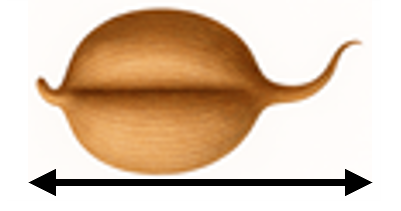
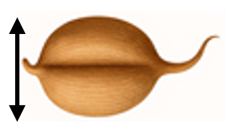
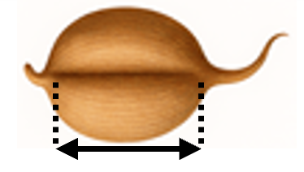

Wheat Seed Identifier
Seed Measurement Controls
Seed Length

5.0
Seed Width

5.0
Groove Length
ⓘ

5.0
Groove length adjusted to match seed length
Predict Wheat Species
Predicted Species
Make a prediction to see results
Show Sample Data
Model Details
Sample Training Data
Training model, please wait...
Model Details
×
Algorithm: Logistic Regression
Confusion Matrix
Dataset Information
Performance Metrics